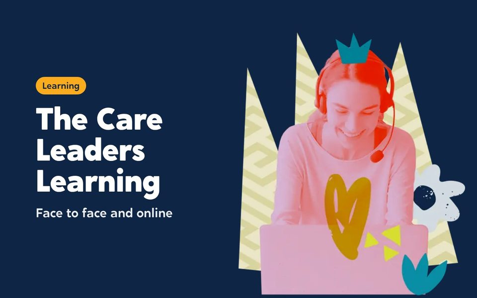

Where to start depends on what you need to change.
We work with councils, virtual schools, fostering services and national bodies across England. Some commission a year of consultancy to redesign a service. Others book a course for one team, or a keynote for their conference.


What do you need to change?
Pick the closest match and we’ll show you where to start.
If you need to redesign a service, start here:
If you need to hear from children and young people, start here:
 Participation and co-productionYouth voice that changes decisions, not just reports.Find out more
Participation and co-productionYouth voice that changes decisions, not just reports.Find out more The Care Leaders AcademyLeadership for care-experienced young people, 13 to 18.Find out more
The Care Leaders AcademyLeadership for care-experienced young people, 13 to 18.Find out moreIf you need to get care leavers into work, start here:
If you need to train our staff, start here:

The Care Leaders LearningAll our training: face to face and online.Find out more The Journey Through CareOur flagship training, through one child’s story.Find out more
The Journey Through CareOur flagship training, through one child’s story.Find out more NVR EssentialsA one-day introduction to non-violent resistance.Find out more
NVR EssentialsA one-day introduction to non-violent resistance.Find out more A guide to good recordingRecording training and a workbook.Find out more
A guide to good recordingRecording training and a workbook.Find out moreIf you need to bring nvr into our service, start here:
If you need to support schools and designated teachers, start here:
If you need to recruit and support foster carers, start here:
If you need to book a speaker for an event, start here:
If you need to build something for care-experienced people, start here:
If you need to train a whole workforce online, start here:


Everything we offer
Consultancy
Change inside your service, led with the people it affects.
 Fostering, with Why CareTurn people who want to foster into confident carers who stay, and put the new standards into practice.Find out moreParticipation and co-productionYouth voice that changes decisions, not just reports.Find out more
Fostering, with Why CareTurn people who want to foster into confident carers who stay, and put the new standards into practice.Find out moreParticipation and co-productionYouth voice that changes decisions, not just reports.Find out more Employment and pathwaysRoutes into work for care-experienced young people.Find out more
Employment and pathwaysRoutes into work for care-experienced young people.Find out moreProgrammes
Longer programmes, commissioned for a group or a whole area.
 Designated Leaders ProgrammeA year of leadership for designated teachers.Find out moreThe Care Leaders AcademyLeadership for care-experienced young people, 13 to 18.Find out more
Designated Leaders ProgrammeA year of leadership for designated teachers.Find out moreThe Care Leaders AcademyLeadership for care-experienced young people, 13 to 18.Find out more Care to WorkWork experience at 16 to 18 and paid roles at 18 to 25.Find out more
Care to WorkWork experience at 16 to 18 and paid roles at 18 to 25.Find out more NVR across your serviceNon-violent resistance, built into how your whole team works.Find out more
NVR across your serviceNon-violent resistance, built into how your whole team works.Find out more The Fellowship12 months of entrepreneurial leadership. Applications open in November.Find out more
The Fellowship12 months of entrepreneurial leadership. Applications open in November.Find out moreThe Care Leaders Learning
All our training, in two parts. See it all
The Journey Through CareOur flagship training, through one child’s story.Find out moreNVR EssentialsA one-day introduction to non-violent resistance.Find out moreA guide to good recordingRecording training and a workbook.Find out more Tools for SchoolsReading the messages in children’s behaviour.Find out more
Tools for SchoolsReading the messages in children’s behaviour.Find out moreKeynotes
Luke Rodgers BEM speaking at your event.